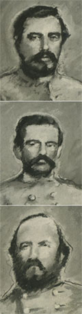
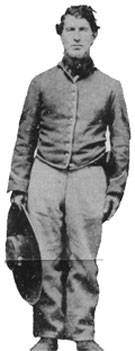
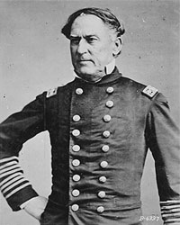
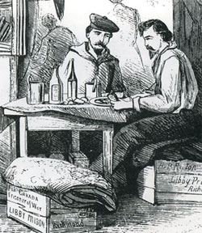

|

Captains Refugio and Cristobal Benavides
and their brother-in-law John Leyendecker were part of an
effective Confederate cavalry unit, led by another brother,
Col. Santos Benavides.
|
America's Civil War touched the lives and divided the
loyalties of the nation's Hispanic population as it did
everyone else during that tumultuous time. From the first
shots at Fort Sumter, South Carolina, in 1861, to the last
action at Palmito Ranch, Texas, in 1865, Hispanics were
involved in every aspect of the war and made notable
contributions on behalf of their chosen sides. People of
Spanish heritage lived in all parts of the country. Some
traced their ancestry to explorers and pioneers who had
settled in the United States several generations ahead of
the English; others were recent immigrants, born in Cuba or
other Latin American countries and drawn to America for
education, employment, or land. Those who joined the war
effort represented all economic and social levels--from
wealthy aristocrats fighting to preserve their way of life,
to impoverished laborers seeking to change their lives. Like
other Americans, Hispanics entered the war for reasons of
patriotism, private beliefs, or personal gain. And, like
other Americans, they were divided by the conflict: names
such as Gonzales, Garcia, Perez, and Sanchez appeared on the
rosters of both Union and Confederate armies.
Spain once laid claim to much of the land that stretches
from Florida to California. Its campaign of exploration and
conquest began with Christopher Columbus and continued for
three centuries. As early as 1526 settlers from Hispaniola
arrived at what is present-day South Carolina, and through
the 1500s and 1600s the Spanish pushed westward,
establishing trading posts and colonies on the fringes of
rivers, the coastal plains, and especially the Gulf of
Mexico.
By the mid-19th century and the approach of the Civil War,
Spanish roots ran especially deep in two diverse parts of
America: in the Gulf states, particularly Louisiana, and in
the Southwest. In Louisiana, once owned by Spain,
descendants of Spanish explorers and settlers made their
homes in the bayous, on large plantations, and in the
bustling port of New Orleans. Louisiana's population
represented a rich mixture of cultures and languages:
French, Spanish, Caribbean, Indian, African, German, and
Anglo-American. The Creoles of Louisiana were the
aristocracy--the well-established and well-to-do planters
and merchants who traced their lineage to the original
Spanish or French colonists. They often sided with
like-minded southern neighbors in the Confederacy.
Hispanic soldiers supported Louisiana's war effort both at
home and in the field. The City of New Orleans mustered
nearly 800 Spanish soldiers as part of the "European
Brigade," a home guard of 4,500 that was to keep order and
defend the city. Other Louisiana regiments also recruited
Hispanics. Harry T. Hays's Brigade, popularly called the
"Louisiana Tigers," and William E. Starke's Brigade included
native Louisianans of Anglo and Creole descent, plus men
from Spain, Cuba, Mexico, and other Latin American
countries. Both brigades campaigned with Robert E. Lee's
Army of Northern Virginia in the eastern theater of the war
and saw action at the major battles of Antietam and
Gettysburg. Other Gulf Coast states also mustered Hispanics
into the military. One Alabama company, the Spanish Guards,
was made up exclusively of men with Spanish surnames and
served as a home guard for Mobile. Two regiments--Alabama's
55th Infantry, which served in the Vicksburg, Atlanta, and
Nashville campaigns, and Florida's 2nd Infantry, which
fought at Antietam and Gettysburg--included a number of
Hispanic soldiers. Hispanic participation was greatest in
Texas and territories of the Southwest. Arizona, California,
New Mexico, and Texas were predominantly Hispanic. Although
Spanish influence could be traced back three centuries,
relatively recent events had increased contact between
Hispanic and Anglo cultures: The absorbing of new
territories following war with Mexico, the California gold
rush, and increasing westward expansion strengthened ties to
the rest of the United States. As elsewhere, Hispanics in
the Southwest had divided loyalties when the Civil War
began. In Texas and New Mexico, where bitter feelings
lingered from the Mexican War, some Hispanics sided with the
Union. Others tied politically and economically to the
fortunes of Missouri and lucrative trade on the Santa Fe
Trail, sided with the Confederacy.
Recognizing the importance of the Southwest for shipping
routes to the West Coast and rich gold fields, the
Confederacy launched a campaign to secure New Mexico and
Colorado. The United States, on the other hand, was
determined to keep New Mexico in the Union and to prevent
Confederate expansion. This meant the Union needed to gain
the trust and support of local populations that had been
forced into the United States only fifteen years earlier in
the war with Mexico. Federal authorities sent influential
|

Sgt. Patricio Perez, like many in the 2nd Texas
Cavalry, wore the sombrero instead of regulation issue headwear.
|
Hispanics to towns and villages to encourage enlistments.
They promised that the families of nearly destitute recruits
could get food from government storehouses. Native New
Mexicans, said one recruiter, "will not enlist readily
unless they know that their families are cared for." For
other Hispanics the thirteen dollars a month paid private
soldiers in the Union army was a better wage than most
laborers received in New Mexico. Enlistment meant escape
from a system of debt peonage that forced them to labor
under conditions little better than slavery. In addition to
the usual duties of soldiering, the men of the New Mexico
Volunteers were expected to recruit for the regiment. Such
tactics as these proved successful. Of the 10,000 Hispanics
estimated to have joined the military in the Southwest
alone, more than half were in Union armies. Many New Mexico
volunteers lacked formal education, but they were valued
soldiers and scouts. Descendants of pioneers, they knew the
terrain well and had experience in combat against the
Apaches and Comanches. Capt. Rafael Chacon, a graduate of
the Mexican Military Academy of Chihuahua, Mexico, led one
Union company. Chacon was praised as "an accomplished
gentleman and a general favorite." A traveler being escorted
by his troops in 1863 recalled: "Our escort for the present
is the company of Captain Chacon, 1st New Mexico Volunteers
... These Mexican soldiers ... are most thoroughly
disciplined and seem possessed of all the requisites of fine
soldiers."
Some of the bitterest fighting in the Southwest occurred in
Texas, where Hispanics served in the armies of both sides.
The Union supported the raiding operations of Antonio Ochoa,
Octaviano Zapata, Celario Balerio, and Juan Cortina, who
preyed upon Confederate interests along the Mexico-Texas
border. Their attacks on military and economic targets
disrupted operations and kept Confederate troops occupied.
Confederate forces under Hispanic officers like Col. Santos
Benavides and his brothers Refugio and Cristobal retaliated.
Benavides's regiment of cavalry was one of the largest and
most effective units keeping Union forces from interrupting
Confederate cotton trade into Mexico. On March 19, 1864, the
unit repulsed a Union attempt to capture Laredo and the
cotton stores there. Hispanics made up a large part of both
armies at this battle. Benavides's troops were said to be
"the peers of any soldier or officer in the Confederate
armies," and received a citation from the Confederate Texas
Legislature for "vigilance, energy, and gallantry." Not all
Hispanic soldiers came from the Deep South or the Southwest.
Others enlisted from northern states, especially urban
centers that had large mixed ethnic populations. Pedro H.
Alvarez, for example, enlisted in the Union army at New York
City in 1861. where he mustered into the famous 5th New York
Zouaves. Joseph C. Rodrigues served as a captain in the 9th
New York Infantry which fought at South Mountain, Antietam,
and Fredericksburg. Mexican-born cabinet maker Calistro
Castro enlisted in 1861. Promoted to corporal, he saw
considerable service with the 5th New Jersey Volunteer
Infantry. At the Second Battle of Bull Run, a bullet smashed
his canteen after striking a fellow soldier.
Spanish and Portuguese soldiers made up one company of the
"Garibaldi Guard," the 39th New York Infantry known for its
distinctive Italian-style uniforms. The company was captured
at Harpers Ferry in 1862 but returned to action in time for
the battle of Gettysburg and the rest of the major campaigns
of the Army of the Potomac.
Joseph Augustin Quintero is an example of a
northern-educated Hispanic who threw his lot with the
Confederacy. Born in La Habana, Cuba, he was educated at
Harvard College and taught Spanish in Massachusetts in the
1840s. He practiced as an attorney in Texas but later moved
to New York City. At the outbreak of war, Quintero returned
south and enlisted in the Confederate army as a private. He
served in Virginia with the Quitman Rifles until
transferring to the Confederate Diplomatic Service where he
was appointed Confidential Agent to Mexico.
Some of the most dramatic fighting of the Civil War occurred
on the high seas where Hispanics served with valor in the
navies of both sides.
Two Hispanic Union sailors earned Medals of Honor for their
actions in battle. Philip Bazaar was a seaman on board
U.S.S. Santiago de Cuba in 1865. He was one of six
men from the fleet to enter the enemy works during the
assault on Fort Fisher, North Carolina. He carried
dispatches during the battle while under heavy fire from the
Confederates, and for these actions, Seaman Bazaar was
awarded the Medal of Honor. John Ortega enlisted in
Pennsylvania and served as a seaman on U.S.S.
Saratoga. Conspicuous gallantry in two actions gained
Ortega the Medal of Honor and a promotion to acting master's
mate.
For his exploits during the Civil War, Adm. David G.
Farragut became one of the most famous naval commanders in
|

The rank of full admiral in the U.S. Navy was created
especially for David G. Farragut, whose actions
in the Civil War made him a national hero.
|
American history. Born to a Spanish father and an American
mother, Farragut was raised in Tennessee and began his naval
career when only 9 years old. He served in the War of 1812
and the Mexican War and was 60 when the Civil War broke out.
He lived in Virginia at the time but sided with the Union.
Promoted to rear admiral for success in an expedition that
he commanded to New Orleans, and later appointed vice
admiral, Farragut became famous for his capture of Mobile
Bay and his command, "Damn the Torpedoes, Full Speed Ahead!"
In 1866, Farragut was promoted to full admiral, a rank in
the U.S. Navy created especially for this national hero.
Dozens of Hispanic sailors have been identified on
Confederate warships as well, such as Seamen A.P. Garcia
aboard C.S.S. Huntsville, brothers Peter and Domingo
Francisco aboard C.S.S. Morgan, and Seaman Antonio
Silva on C.S.S. Sea Bird. W.D. Oliveira served as
master's mate on the Confederate tender Resolute. One
of the most daring Hispanics in the Confederate navy was
Michael Usina, a captain on blockade runners, vessels that
smuggled supplies past Union ships blockading Southern
ports. Usina had many narrow escapes but avoided capture and
after the war returned to his work as a river pilot. In the
fields and on the seas, Hispanics fought alongside or
against friends and family, as was the nature of civil war.
They shared the hardships of military life with other
soldiers--poor food, boredom, homesickness, danger--yet they
performed their duties well and contributed significantly to
the war efforts of their chosen sides. Few first-person
accounts have been found to tell about the daily lives and
feelings of Hispanic soldiers, but national battlefield
parks from Gettysburg, Pennsylvania, to Glorieta Pass, New
Mexico, give silent testimony to their valor.
Two Hispanic soldiers whose lives had many parallels chose
different sides in America's Civil War. At war's end, they
continued their respective struggles for freedom under yet
another flag.
Lt. Col. Frederic F. Cavada, a prominent Union officer, was
born in Cuba to a Spanish father and an American mother.
Cavada was educated in Philadelphia and became a strong
defender of reform as a supporter of women's rights, the
abolition of slavery, and independence for his native Cuba.
Cavada commanded the 109th Pennsylvania Infantry at the
battle of Chancellorsville, and the 114th Pennsylvania
Infantry at the battle of Gettysburg. He was captured by the
Confederates and sent to Libby Prison in Richmond. There he
smuggled out notes, scrawled on pieces of newspapers. He
|

Frederic Cavada drew himself in this
scene from Libby Life, a book about his days in a
Confederate prison.
|
later published Libby Life, a book about his
incarceration illustrated by his own drawings, and offered
the book's proceeds to widows and orphans of fellow
prisoners. After the war Cavada returned to Cuba to fight
for liberation from Spain. He was appointed major general
and, in 1874, commander-in-chief of all Cuban revolutionary
forces. That same year, Cavada was captured by the Spanish
on his way to secure war supplies in the United States and
was executed.
Ambrosio Gonzales was born in Cuba to a prominent family and
sent to New York to school. Gonzales completed his education
at the University of Havana. He earned a law degree but
chose a career in education. Prior to the Civil War,
Gonzales was a leader in numerous attempts to invade Cuba
and throw off Spanish rule. His marriage to the daughter of
a prominent South Carolina family brought him to that state.
He found a number of supporters in the South for his efforts
to free Cuba. When war came, Gonzales offered his services
to Confederate Brig. Gen. P.G.T. Beauregard as a private.
The two men had known each other years earlier in school in
New York, and Gonzales was quickly promoted. As a staff
officer he was commended by Gen. Beauregard for his conduct
during the Confederate bombardment of Fort Sumter. Gonzales
later served as the Inspector General of South Carolina and
as chief of artillery for the Department of South Carolina,
Georgia, and Florida. He designed a system of coastal
defenses for the area between Charleston and Savannah and
commanded the Confederate artillery at the battle of Honey
Hill, South Carolina. Like Frederic Cavada, Gonzales
returned to Cuba after the war and continued to support
efforts for independence. Former Confederate president
Jefferson Davis said of Gonzales in 1893, he was "a soldier
under two flags, but one cause: that of community
independence."
Source: U.S. National Park Service in CRM Vol. 20,
No. 11 (1997), 1-3.
|